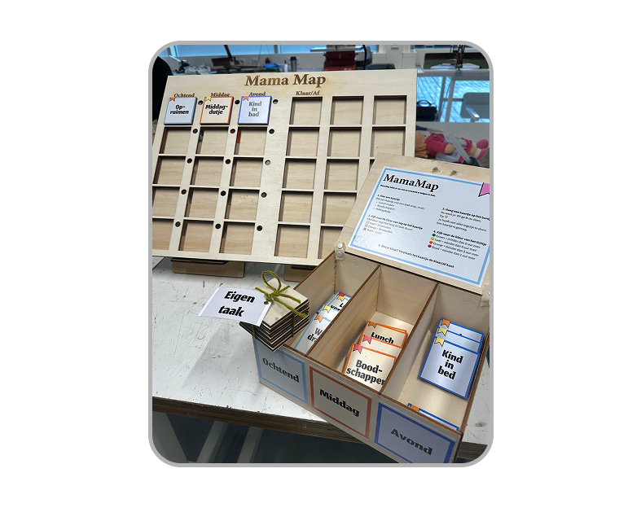
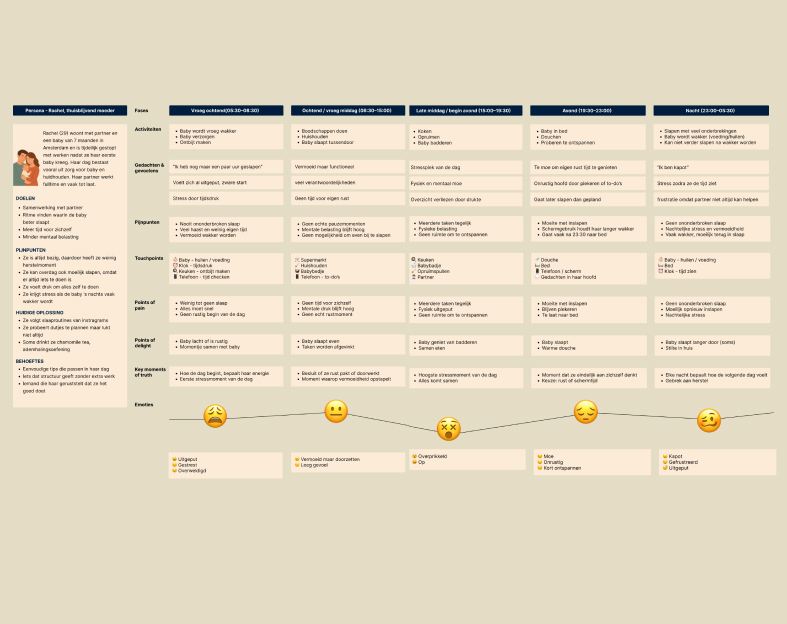
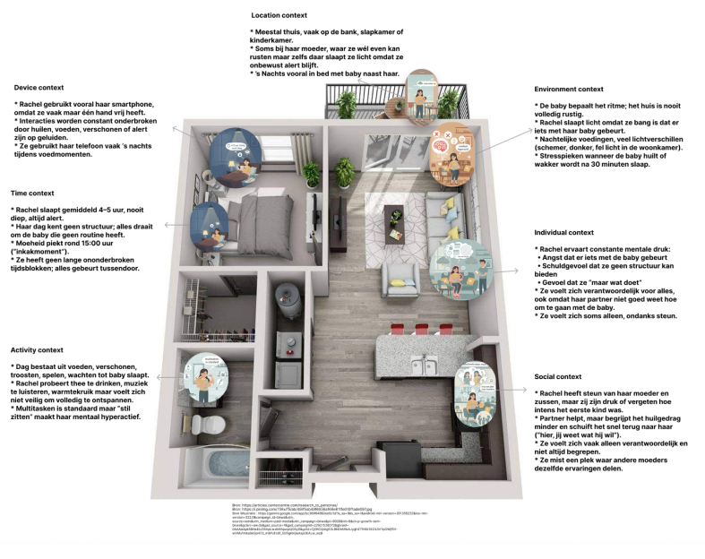
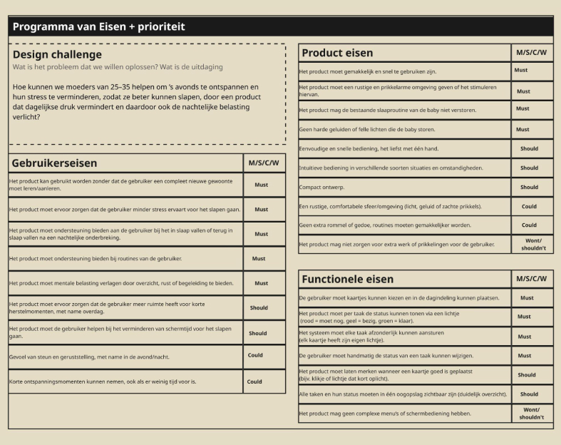
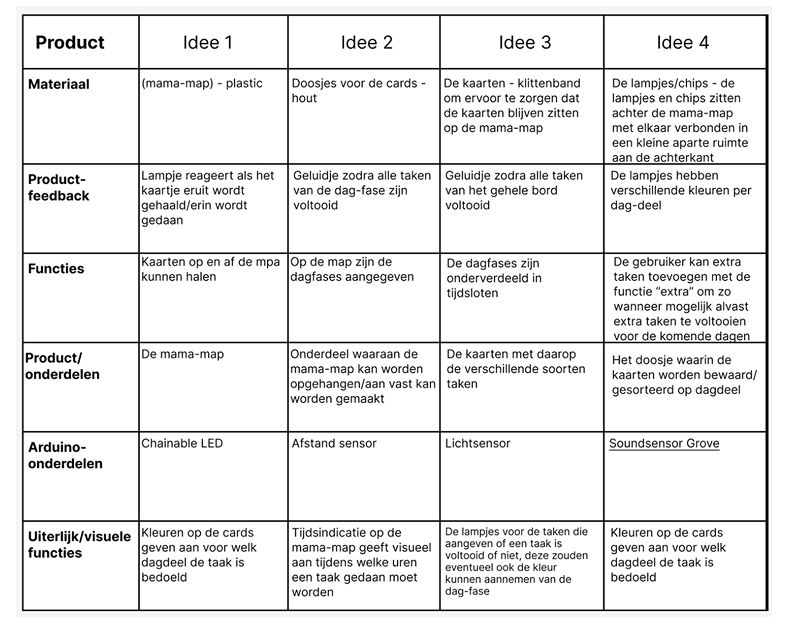
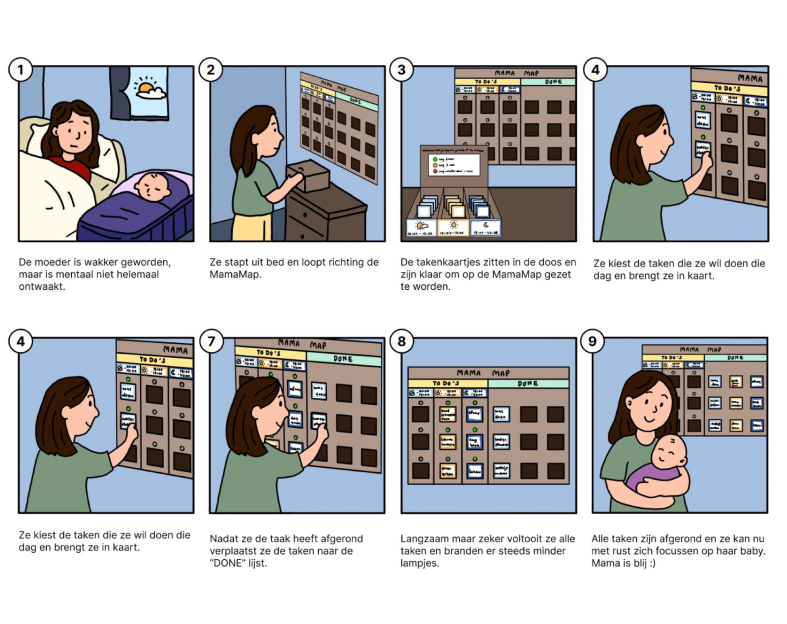
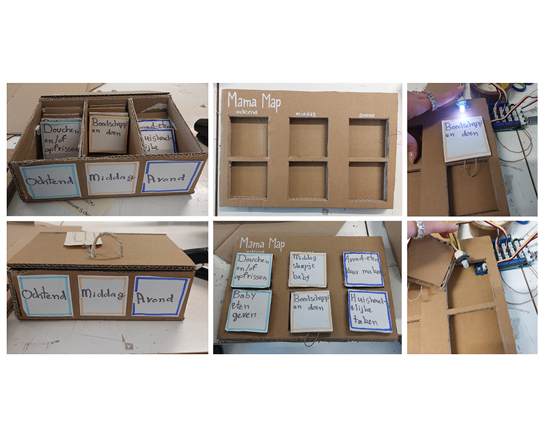
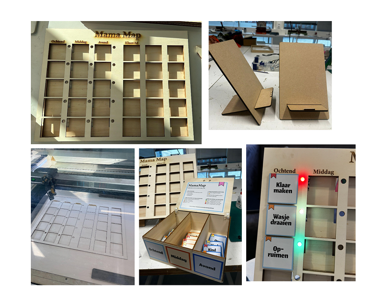

MamaMap - a routine board with microinteractions
Physical Prototype (Makerslab & Arduino Uno)
View product video ↗About this project
This is a team project about sleep. The goal was to design a screen-free interactive product that helps create a good bedtime routine. We chose young mothers with babies as our target group. Many mothers in this phase feel tired and stressed because they care for their baby all day, have little time to rest, and experience an irregular daily rhythm. This often leads to poor sleep.
This project focuses on creating a simple and supportive product that helps mothers feel calmer and more organized during the day. By supporting routines and small moments of rest, the product helps reduce stress and makes it easier for mothers to relax and sleep better.
Vooronderzoek
To understand the MamaMap target group, we did desk research and interviews. These showed that stress and poor sleep are linked to daily routines and a lack of rest moments. This is reflected in the user journey and supported by the persona, context map, program of requirements, morphological chart, and storyboard. Together, they show that the solution should be simple, calming, and support rest throughout the day to help improve sleep.
User journey

The user journey shows that stress and tiredness build up during the day, not just in the evening. Without enough moments to relax, mothers start the evening already stressed. This supports creating a design that helps mothers relax at several moments during the day.
Context map

The context map clearly shows what we discovered through our research and interviews. It highlights where the problems are, what people experience, and where there are opportunities for improvement. It works as an overview that explains the situation, the pain points, and where we can make a difference.
User Requirements

User Requirements builds on the research and translates the needs from the Job Stories into clear design criteria. The must-haves focus on simplicity and ease of use, the should-haves address stress and lack of rest, and the could-haves describe a calm and familiar feeling. The shouldn’t-haves ensure the product does not disturb the baby or add extra screen time.
Morphological chart

The morphological chart shows how the concept becomes a clear and concrete product. It focuses on showing tasks and times of day in a visual way and giving simple feedback when a task is done. By using physical cards and light, it creates more overview and calm without being complicated.
Concept & Design
MamaMap is a simple, physical planning board that helps new mothers create overview and reduce stress. Tasks are divided into morning, afternoon, and evening, with LED colors showing how much time is left. When a task is completed, it moves to the done side, the LED turns off, and a reward sound provides positive feedback. It is calm, clear, and easy to use without an app.
Storyboard

The storyboard shows a visual preview of the product before it was made, explaining how it will look and how it works.
Lofi design

We made a lofi prototype using cardboard with a small number of task slots. We also used an Arduino Uno for micro-interactions, including a light sensor and chainable LEDs. When a card is placed in a slot, the light turns on to show that the task still needs to be done.
Hifi design

Based on the lo-fi feedback, we made a larger board and added a clear done side to show what has already been completed. We used wood because it is more durable and stronger than cardboard. The LEDs use colors to show how much time is left for a task. When a card is removed and placed on the done side, a reward sound plays, helping the mother feel motivated.
Product video
In the product video, you can see how the product works in a real-life situation.